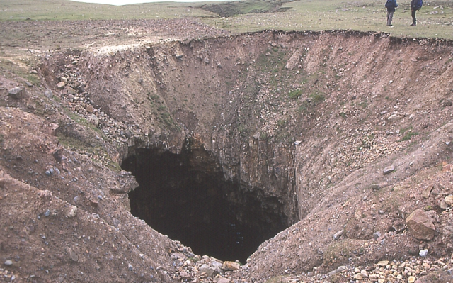

Image of SCP-1437 before containment
Item #: SCP-1437
Object Class: Safe
Special Containment Procedures: SCP-1437 is to be contained behind a perimeter of two (2) meter tall electrical fencing, which is to be patrolled by groups of three (3) security officers at all times. Any trespassers attempting to access SCP-1437 are to be brought into custody, interrogated, and if found to be ignorant of SCP-1437's nature, dosed with a Class-A amnestic and released.
Any items or organisms which emerge from SCP-1437 are to be immediately tested for hazards, and if found safe, examined further. Experimentation involving SCP-1437 is strictly forbidden.
Description: SCP-1437 is an apparently endless hole measuring 3m x 3m, located in the ██████ Desert. Attempts to dig into SCP-1437 from the side result in the diggers encountering solid rock where logic would dictate SCP-1437 would be. SCP-1437 is thus only accessible from its entrance above ground.
SCP-1437 appears to be an access point to an as-of-yet unknown number of parallel universes. Objects have been known to periodically emerge from SCP-1437 at great speeds, including:
- One (1) US quarter. (First known object emergence.)
- Large quantities of dirt and rocks. (Believed to be an attempt by a parallel containment team to fill in their corresponding SCP-1437.)
- A map of North America written in Spanish. (According to said map, the government of North America is "La República Popular de Aguas Nuevas", or "The People's Republic of New Waters".)
- A photograph of a skyline, believed to be a radically altered version of New York's. (Structures resembling coral are visible and a large flying organism can be seen in the distance.)
- Several disks made from solid gold. (Accompanying the disks was a sheet of paper reading 'PLEASE SEND RAIN'.)
During a period lasting from 200█-20██, numerous individuals, most of whom wore D-class uniforms, emerged from SCP-1437; all of them were dead on arrival.1 All emerging individuals carried documents which appear to be their respective universes' documentation on SCP-1437. It is currently believed that these D-class personnel and previously mentioned documentation were sent as a gesture of desired cooperation.
{kind=link}
{kind=link}
{kind=link}
{kind=link}